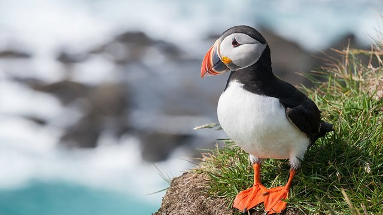

物理5–11 岁约 10 分钟
翅膀在水里划才潜得下，翅膀收着就浮着？
同一只纸小海雀。翅膀在水里划才潜得下；翅膀收着就浮着。它个子小，翅膀又短又硬；一头扎进冷海，把短翅当两支小桨，在水下一下一下扑着划，身子才沉得下去、走得动；翅膀一收拢贴在身上，不划了，身子自己就浮回水面。本页不追真的，观察后洗手。
同一只纸小海雀，翅划一回，翅膀收着一回

翅膀在水里划才潜得下。翅膀收着就浮着。先点「翅划」，再点「试一试」。
先猜一猜，再试
第 1 题：调到 80，翅膀在水里划，潜得下吗？
押一个。把滑条调到 80，再点试一试。
第 2 题：调到 10，翅膀收着，还潜得下吗？
押好后滑条 10，再试一试。
第 3 题：调到 50，刚好一半，算潜得下了吗？
押好后滑条 50，再试一试。
同一只纸小海雀：翅膀在水里划才潜得下；翅膀收着就浮着
先点「翅划」再点「试一试」，看潜得下。再点「收翅」试一次，看是不是浮着。
纸小海雀始终是同一只。要紧的是划不划：又短又硬的翅膀像两支小桨，在水下一下一下扑着划，身子才沉得下去、走得动；一收拢贴在身上，不划了，身子自己浮回水面。海鹦的绝活是一嘴横叼一排小鱼——另开，不比；光用脚蹬也替不了这两支小桨。
舞台上的读数是本页比较尺子：滑条 ≥ 80 才算潜得下。刚好 50 还不够。不追真的，观察后洗手。本页用纸板。
翅划图鉴
点一张，对照舞台：谁让翅膀在水里划才潜得下，谁让翅膀收着就浮着。
点一张图鉴，对照为什么翅膀在水里划才潜得下。
猜一猜
同一只纸小海雀要潜得下，靠的是翅划，还是翅膀收着？
先押一个，再点「看答案」。
任务：翅划和翅膀收着都试
先把滑条调到 80 或更高试一次，再调到 20 或更低试一次。两头都点过「试一试」即可完成。
开放式提示不会代替上面的正式任务。
尚未完成：先翅划试一次，或翅膀收着试一次。
同一只纸小海雀，先翅划试一次，再对照试一次
舞台上只改一件事：翅膀在水里划有多够。同一只纸小海雀，先翅划试一次，看潜没潜下去；再收翅试一次，看是不是浮着。这样比，才知道潜得下靠的是短翅当桨一下一下划，不是「收着也一样」，也不是「海鹦那种叼鱼」。
回家只带两句：「翅膀在水里划才潜得下」；「翅膀收着就浮着」。不要写成「憋气越久越好」。
短翅当桨一下一下划，身子才沉得下去。
翅膀收着，只能浮着潜不下；小海雀要翅膀在水里划，不是海鹦那种叼鱼。
海鹦那种叼鱼另开；本页比翅膀在水里划还是翅膀收着，两句不要并成一句。
不追真的，本页用纸板对照。
这在教什么：孩子要能对翅划和翅膀收着各报成不成，并否定「海鹦那种叼鱼」和「换一套就一样」。
- 本页比的是纸小海雀把又短又硬的翅膀当小桨在水下扑划才潜得下，还是海鹦一嘴横叼一排小鱼那种童话？
- 翅膀收着，台上还潜得下吗？
- 本页比的是小海雀把又短又硬的翅膀当两支小桨、在水下一下一下扑着划身子才沉得下去，还是海鹦一嘴横叼一排小鱼的叼？
- 能去追崖边的真小海雀吗？
进去靠翅膀在水里划，不是海鹦那种叼鱼，更不要去追真的
小海雀个子小，翅膀又短又硬。潜水时它一头扎进冷海，把短翅当两支小桨，在水下一下一下扑着划，身子才沉得下去、走得动；翅膀一收拢贴在身上，不划了，身子自己就浮回水面。
不要把它讲成「憋气越久越好」或「换成别的鸟就能成」。海鹦的绝活是一嘴横叼一排小鱼，另一页的账；小海雀比的是翅膀在水里划。
不追真的。看完按二十秒洗手。本页用纸板。
给家长的问题
- 翅划那一次，孩子指的是这一招，还是在说「它比较猛」？让他再指一次做对的那一下。
- 翅膀收着，为什么浮着？哪一句四岁听得懂？
- 如果他说「海鹦那种叼鱼就能进」——海鹦那种叼鱼是哪一笔账？本页少的是翅划还是海鹦那种叼鱼？
- 海鹦那种叼鱼和小海雀翅划，差在「点一下」还是「翅膀在水里划」？
- 不追真的、看完洗手：红线怎么说？本页能当乱追真动物的课吗？
背后的原理
舞台上不写这些词，留给孩子用眼睛看。小海雀（Alle alle）翅膀在水里划，才潜得下。翅膀收着就浮着。不要追真的。本页用翅划 ≥ 80 当门槛，≤ 20 算翅膀收着。刚好 50 不算。
这不是海鹦那种叼鱼说明书，也不是用脚蹬。海鹦那种叼鱼另开，都不要并进本页第一完成句。
人去追活小海雀会让它受惊。观察后洗手。舞台用纸板。
接下来可以去
带走句：翅膀在水里划才潜得下；翅膀收着就浮着。小海雀观察站看真翅划。